Pe fila Inserare (Insert) din grupul Simboluri(Symbols)
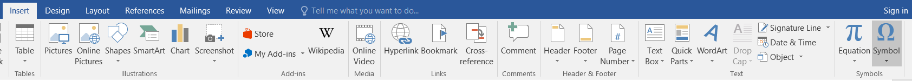
se alege
simbolul dorit:
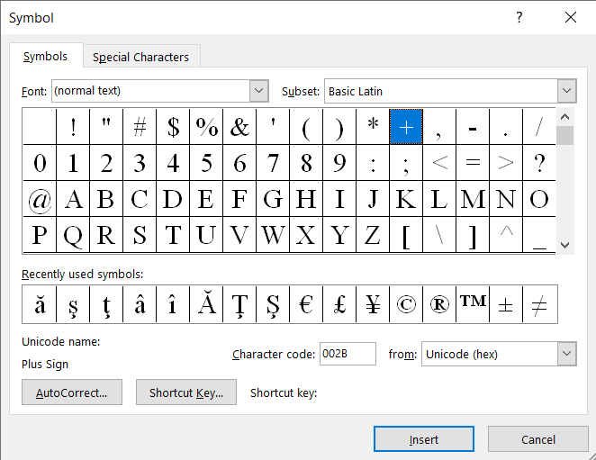
Pe fila Inserare (Insert) în grupul Simboluri(Symbols)
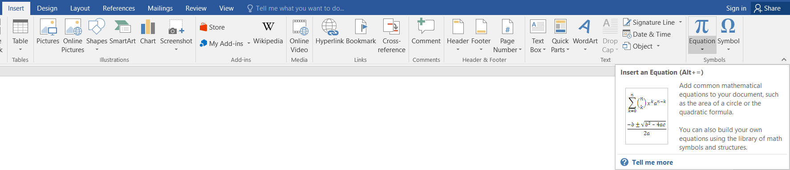
se poate alege o ecuaţie din listă
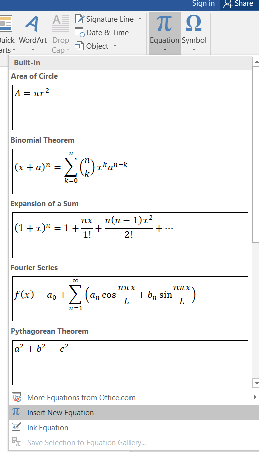
sau se poate insera o ecuaţie(formula) nouă (Insert New Equation) care se editează folosind simbolurile cuprinse în fila Proiectare(Design) care apare:
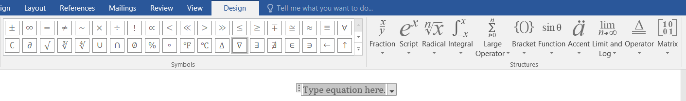
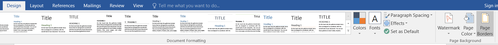
Pentru pagini selectaţi Bordură pagină (Page Border) din caseta de dialog Borduri şi umbriri(Borders and Shading)
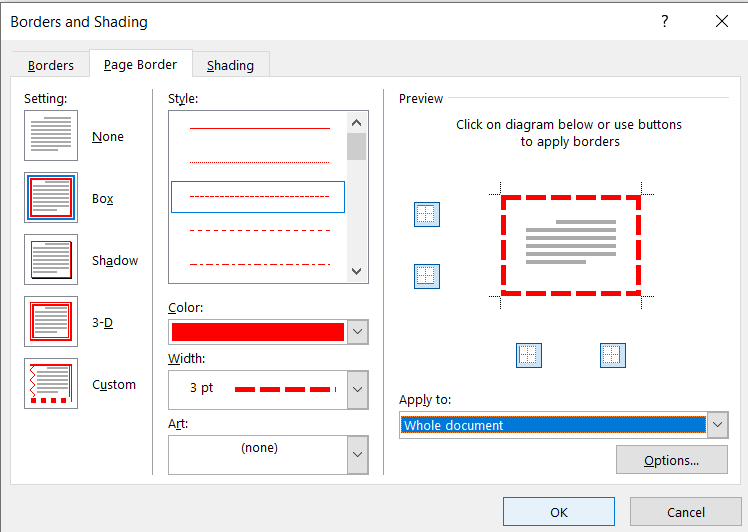
şi setaţi proprietăţile chenarului, Aplică la (Apply to) Întreg documentul(Whole Document).
Faceţi clic în locaţia unde doriţi să inseraţi imaginea. În fila Inserare (Insert) în grupul Ilustratii (Ilustrations) faceţi clic pe Imagine (Pictures) şi în fereastra care apare selectaţi o imgine şi apăsaţi butonul Inserare (Insert).
Imaginea se poate introduce într-un chenar(Picture Border):
I se poate aplica un efect(Picture Effects):
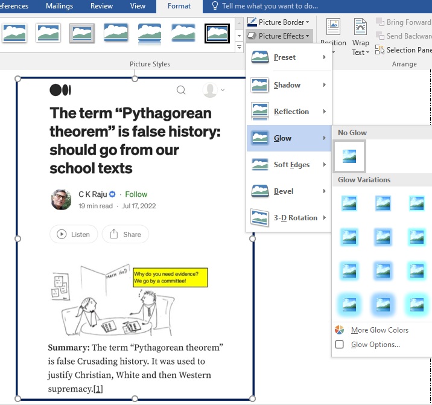
Se poate seta poziţia(Position) în raport cu textul, etc...:
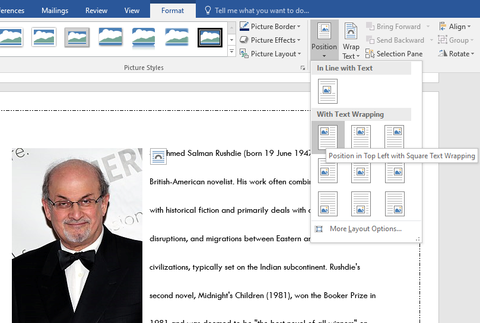
Salman Rushdie
Pe fila Inserare (Insert) în grupul Antet & Subsol(Header & Footer) se poate alege Număr de pagină(Page Number):
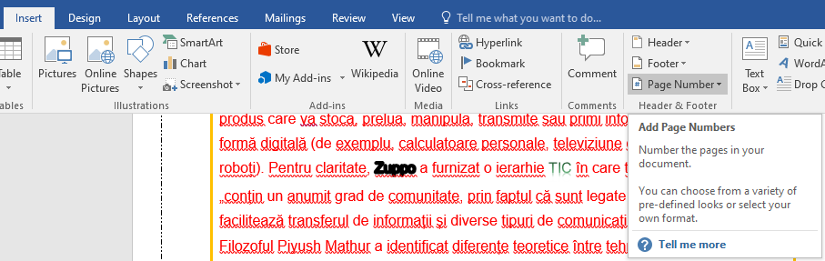
şi din listă se poate alege poziţia şi formatul dorit:
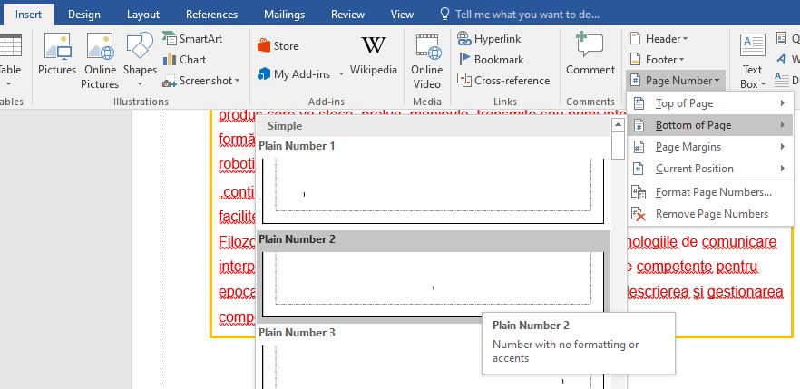
- ⇨ Lansaţi procesorul de text Microsoft Word
- ⇨ Pentru margini alegeţi formatarea predefinită Wide din listă
- ⇨ Scrieţi titlul ORAR cu font CASTELLAR, mărime 18, culoare red, subliniat, centrat
- ⇨ Inseraţi un tabel de 6 coloane şi 7 rânduri în care scrieţi orarul clasei voastre
- ⇨ În căsuţa fiecărei zile din săptămâmă insertaţi câte o miniatură
- ⇨ Sub tabel scrieţi folmula de calcul a rădăcinilor ecuaţiei de gradul doi
- ⇨ Sub ecuaţie scrieşi textul: PROGRAM DE VACANŢĂ
- ⇨ Convertiţi acest text in WordArt
- ⇨ Sub acest text inseraţi o imagine de vacanţă
- ⇨ Salvaţi acest fişier cu numele "Şcoala si vacanţa" .